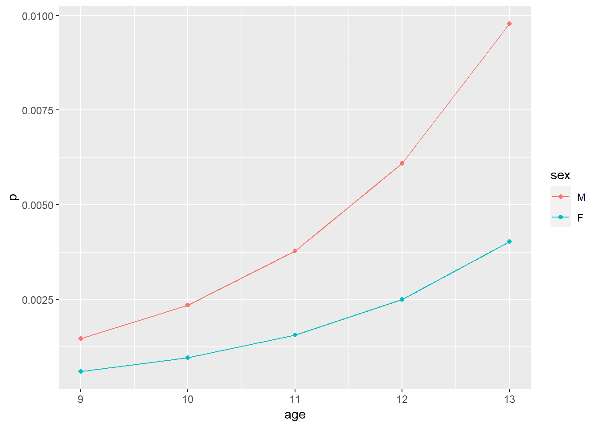

4 Logistic Regression
In this chapter, we’ll see the advantage of R’s linear regression-centric statistical analysis style (i.e., in which basically everything works the same way as a linear regression). Specifically, we’ll switch to a different form of statistical model, with different assumptions and observe that almost everything is the same.
This has the advantage that we need to relearn very little from model to model, and that we can feel more confident that we got our new model (in this case a logistic one) right on the first try.
4.1 Steps 1 & 2 - Import and clean data
To maximize comparability with the regression and hypotehsis testing chapters, we’ll again use the KSADS ABCD dataset. We can again import that dataset with our custom functions from earlier chapters.
library(tidyverse)
read_abcd_quietly <- function(file_path){
suppressMessages(
expr = read_delim(file_path, delim = '\t') %>%
filter(row_number() != 1) %>%
type_convert())
}
df <- read_abcd_quietly('data/abcd_lpksad01.txt')With the dataset loaded, we can now engage in some basic cleanup - the same as in previous chapters.
df <- df %>%
arrange(src_subject_id) %>%
select(
id = src_subject_id,
age = interview_age,
sex,
num_hosp = kbi_ss_c_mental_health_p_l,
grades = kbi_p_grades_in_school_l) %>%
group_by(id) %>%
arrange(age) %>%
mutate(
age = floor(age / 12),
sex = factor(sex, levels = c('M', 'F')),
time = row_number(),
n_timepoints = max(time)) %>%
ungroup() %>%
filter(time == 1) %>%
filter(grades %in% 1:5) %>%
select(id, age, sex, grades, num_hosp)
df## # A tibble: 9,727 x 5
## id age sex grades num_hosp
## <chr> <dbl> <fct> <dbl> <dbl>
## 1 NDAR_INV9XU9GFCB 9 M 1 0
## 2 NDAR_INV029PWCFY 9 M 1 0
## 3 NDAR_INV06DE9Y0L 9 M 1 0
## 4 NDAR_INV0BL9EL2Y 9 F 1 0
## 5 NDAR_INV13BCLD41 9 M 2 0
## 6 NDAR_INV1APPZYY8 9 F 1 0
## 7 NDAR_INV2B9KMD5C 9 F 1 0
## 8 NDAR_INV2RYEWWRN 9 M 1 0
## 9 NDAR_INV3NT6ML17 9 F 1 0
## 10 NDAR_INV5FKNM21M 9 F 1 0
## # ... with 9,717 more rowsOne difference, though, is that we’ll need a dichotomous variable to analyze in our logistic regression. Here, we turn our num_hosp variable (i.e., the number of times a given patient has been hospitalized since last interview) into a dichotomous one, ever_hosp (i.e., has the patient been hospitalized at all since the past interview?).
df <- df %>%
mutate(ever_hosp = num_hosp > 0)4.2 Steps 3 & 4 - Fit the model and summarize it
To fit a logistic regression, we follow roughly the same steps as a linear one, with just a few changes.
First, we need to use glm() instead of the regular lm(). This is because we are fitting a “generalized linear model” (the family logistic regression belong to) instead of a traditional “general linear model.”
The second change is that we need to tell R which kind of GLM we want to fit (there are many). We do this by telling it what we think the outcome distribution is like (e.g., normal, binomial, etc). In this case, the family of distributions that logistic regressions use is the “binomial” one, so to get a logistic regression we simply feed the argument 'binomial' to the family parameter.
fit <- glm(
formula = ever_hosp ~ sex + age,
data = df,
family = 'binomial')Once the model is fit, we can ask for a summary the same way that we would with a linear regression and we’ll see that the table we get is essentially the same.
summary(fit)##
## Call:
## glm(formula = ever_hosp ~ sex + age, family = "binomial", data = df)
##
## Deviance Residuals:
## Min 1Q Median 3Q Max
## -0.1402 -0.0871 -0.0686 -0.0540 3.7269
##
## Coefficients:
## Estimate Std. Error z value Pr(>|z|)
## (Intercept) -10.8298 3.3850 -3.199 0.00138 **
## sexF -0.8932 0.4792 -1.864 0.06234 .
## age 0.4779 0.3146 1.519 0.12874
## ---
## Signif. codes: 0 '***' 0.001 '**' 0.01 '*' 0.05 '.' 0.1 ' ' 1
##
## (Dispersion parameter for binomial family taken to be 1)
##
## Null deviance: 311.95 on 9719 degrees of freedom
## Residual deviance: 305.73 on 9717 degrees of freedom
## (7 observations deleted due to missingness)
## AIC: 311.73
##
## Number of Fisher Scoring iterations: 94.2.1 Where are my odds ratios?
Most research scientists are used to thinking about logistic regression results in terms of odds ratios. Unfortunately, R won’t give you odds ratios by default. You need to compute them. Fortunately, it is really easy, once you remember that odds ratios are equal to:
\[ OR = e^b = \exp(b) \]
Thus, the quickest way to get them is to extract your coefficients from your fit object, then use exp() on them.
my_odds_ratios <- fit %>%
coef() %>%
exp() %>%
round(digits = 2)
my_odds_ratios## (Intercept) sexF age
## 0.00 0.41 1.61If you are in the process of creating a regression table, though, you might prefer to use broom::tidy() to get a dataframe of your fit object, then modify that with mutate(). This will make your results easier to export in .csv format.
If all you want are the numbers,
results <- fit %>%
broom::tidy() %>%
mutate(or = exp(estimate)) %>%
rename(b = estimate) %>%
mutate(across(where(is.numeric), .fns = ~ round(.x, 3)))
results## # A tibble: 3 x 6
## term b std.error statistic p.value or
## <chr> <dbl> <dbl> <dbl> <dbl> <dbl>
## 1 (Intercept) -10.8 3.38 -3.20 0.001 0
## 2 sexF -0.893 0.479 -1.86 0.062 0.409
## 3 age 0.478 0.315 1.52 0.129 1.61write_csv(results, 'logistic_results.csv')4.3 Plotting predicted values
One question that has come up in the past is how to produce a plot of predicted values for a regression, including logistic ones.
This is possible by mixing tricks from broom and ggplot together, like so.
predicted_vals <- fit %>%
broom::augment() %>%
select(sex, age, log_odds = .fitted) %>%
mutate(odds = exp(log_odds), p = odds/(1 + odds)) %>%
unique()
ggplot(predicted_vals, aes(x = age, y = p, color = sex)) +
geom_point() +
geom_line()